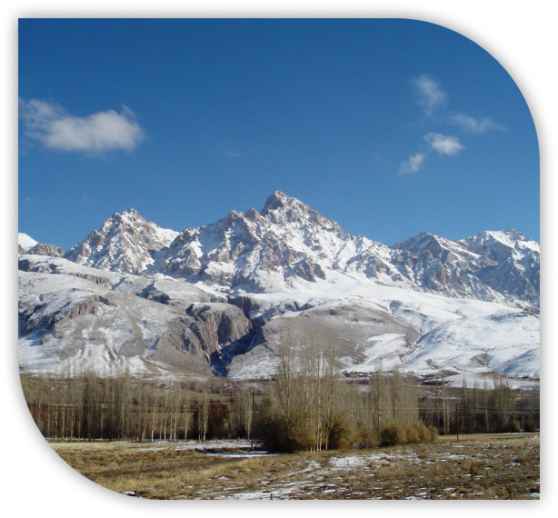
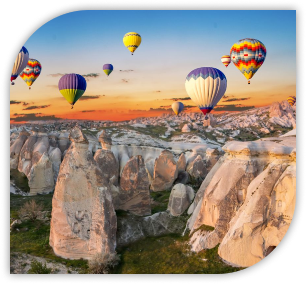
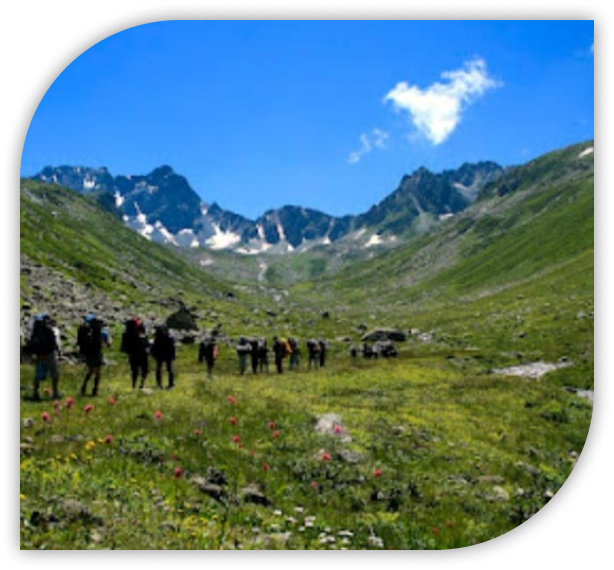
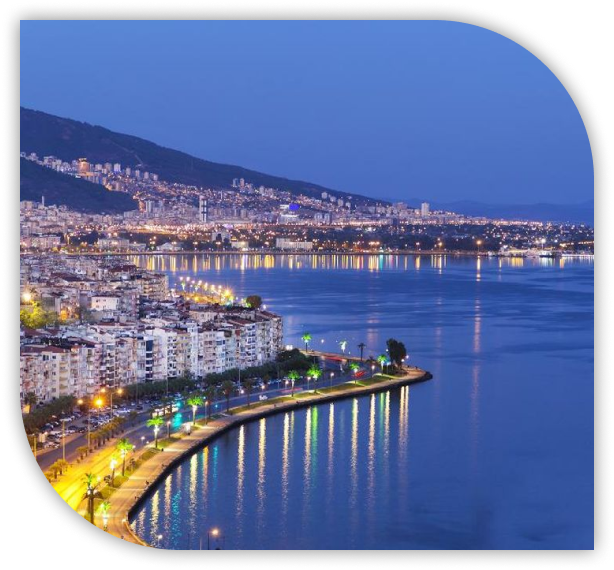

Gunung Dan Pegunungan

Turki diapit Pegunungan Pontus (utara) dan Pegunungan Taurus (selatan). Gunung tertingginya adalah Gunung Ararat (5.137 m) di timur, yang wilayahnya lebih tinggi dan terjal dibanding barat.
Kemegahan Lanskap Turki: Dari Puncak Langit hingga Tepian Samudra
Dari puncak pegunungan dan perbukitan subur, hingga luasnya dataran tinggi Anatolia serta keanggunan dataran rendah pesisirnya. Turki memadukan harmoni bentang alam yang megah di antara dua benua dan tiga laut.




Turki diapit Pegunungan Pontus (utara) dan Pegunungan Taurus (selatan). Gunung tertingginya adalah Gunung Ararat (5.137 m) di timur, yang wilayahnya lebih tinggi dan terjal dibanding barat.
Wilayah Anatolia Tengah dan barat memiliki banyak perbukitan bergelombang. Cappadocia terkenal dengan bukit batuan vulkanik unik yang disebut fairy chimneys.


Bryand Liaw San
X PPLG 1
Website Development

Ghaitsa Rafidatul Barriyah
X PPLG 2
UI/UX Website

Gioffredo HO
X PPLG 2
Mobile Development

Ibrahim Aska
X PPLG 1
UI/UX Mobile

Alvano Darmansyah
X PPLG 1
Mobile Development

Khaulfi Al Farisy
X PPLG 1
Mobile Development

Sabila Azra Aprilianda
X PPLG 1
UI/UX

DATARAN TINGGI
Dataran Tinggi Anatolia Tengah (600–1.200 m, semi-kering) berada di tengah Turki, sedangkan Dataran Tinggi Anatolia Timur lebih tinggi dan berpermukaan kasar.

DATARAN RENDAH
Dataran rendah di Turki terbatas dan banyak terdapat di pesisir Laut Aegea dan Laut Mediterania, termasuk kota Izmir dan Antalya. Di Thrace (barat laut) terdapat dataran lebih luas yang menjadi pusat pertanian penting.